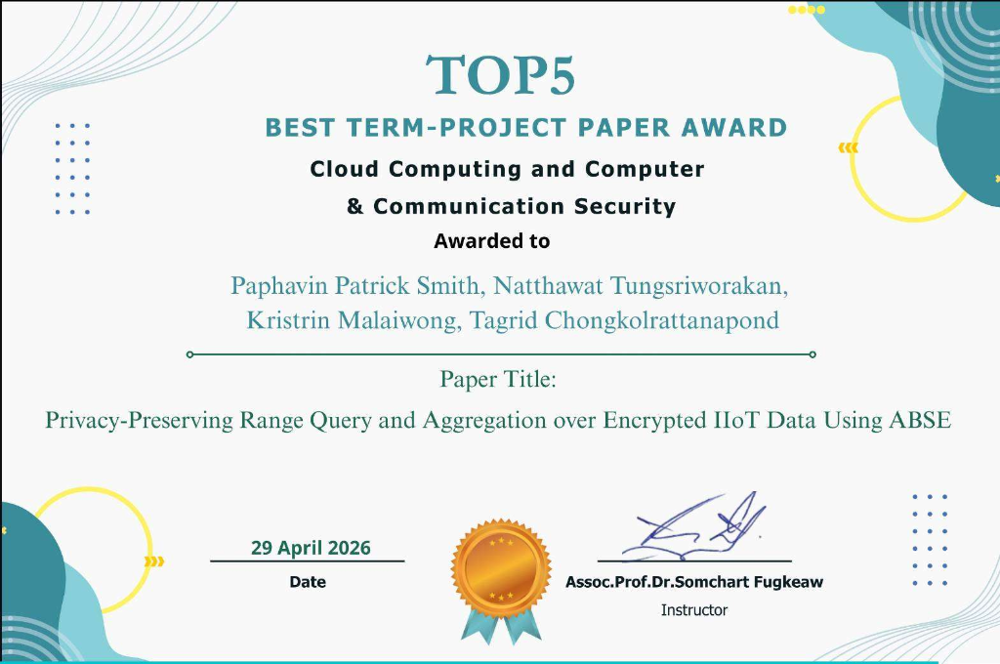

Computer Engineering senior at SIIT, Thammasat University. Co-author of five research projects in secure and privacy-preserving systems for industrial IoT, with hands-on experience in full-stack development, database design, and cybersecurity.
Computer Engineering senior specializing in cryptographic systems, cloud security, and full-stack development.
I am a Computer Engineering senior at Sirindhorn International Institute of Technology (SIIT), Thammasat University, pursuing the Cloud Computing & Cyber Security track. My work focuses on the intersection of cryptography, secure distributed systems, and real-world software engineering.
I have co-authored five academic research projects in secure and privacy-preserving industrial IoT systems, with three papers currently under IEEE review. Beyond research, I actively compete in Capture The Flag (CTF) cybersecurity competitions, sharpening practical skills in web exploitation, cryptography, reverse engineering, and forensics.
My core research interests include Attribute-Based Searchable Encryption (ABSE), verifiable homomorphic aggregation, zero-knowledge proofs, and post-quantum cryptographic primitives for multi-authority cloud and IoMT architectures.
Research Project · IEEE IoT-J
BVCRSA
Verifiable conjunctive range search & homomorphic aggregation over encrypted IIoT data.
Research Project · IEEE IoT-J
PLOSHA-RMFR
Predictive load-sharing hierarchical aggregation with risk-aware multi-layer fault recovery.
Research Project · IoMT
PQ-AVDSE-OJCOMS
Post-quantum & dynamic load-balanced verifiable searchable encryption for multi-authority IoMT.
Research Project · Blockchain
ZKRedact
Zero-knowledge authorized redaction & provenance auditing for permissioned blockchains.
Education
B.Eng. Computer Engineering
SIIT, Thammasat University (Cloud & Cyber Security track, exp. 2027)
Credentials
Honors & Certifications
Top 5 Paper Award (SIIT) · Participant, Cyber Top Talent CTF · AI Ready ASEAN (Google.org)

View Details
Paper Award
Top 5 Paper Award (SIIT)
SIIT, Thammasat University·29 Apr 2026
Recognized for top research paper on Attribute-Based Searchable Encryption (ABSE) with verifiable range query & homomorphic aggregation for IIoT.
Blockchain-based verifiable conjunctive range search and aggregation over encrypted IIoT data with fine-grained attribute-based access control and verifiable homomorphic aggregation.
Fault-tolerant secure aggregation framework for industrial IoT that keeps data processing alive through node failures via predictive load-sharing and risk-aware multi-layer recovery.
Privacy-preserving framework for authorized blockchain redaction using state- and policy-bound zero-knowledge proofs, sharded batch proof verification, and Merkle provenance auditing.
Post-quantum and dynamic load-balanced verifiable searchable encryption for multi-authority IoMT data sharing — an adaptive encrypted search index that optimizes dynamically for rapid range retrieval.
Full-Stack & AWS
DressUp — AI Architecture & System Design
Full SRS/SDS specification and PDPA-compliant AWS EC2 cloud backend design (Node.js, PostgreSQL, OpenAI API integration) featuring normalized ERDs and interactive high-fidelity Figma user prototypes.
Database System
Lost & Found Web Application
Database-backed web application for reporting and claiming lost items. Built with robust relational schema design, custom SQL triggers and stored procedures, password hashing, and responsive UI.
Academic Record
Relevant Courses
Core computer engineering, systems, cybersecurity, and software courses completed at SIIT, Thammasat University.
Relevant Courses
23 Courses Completed · SIIT
Data Structures and AlgorithmsObject-Oriented ProgrammingAlgorithms DesignSoftware EngineeringDatabase SystemsDatabase ProgrammingComputer ArchitectureOperating SystemsComputer NetworksComputer and Communication SecuritySystem Analysis and DesignCloud ComputingDiscrete MathematicsArtificial IntelligenceHuman-Computer InterfaceMicrocontrollersCyber Crimes and Digital ForensicsNetworking LaboratoryTheory of ComputationScientific ComputingComputer Graphics and ApplicationsDigital CircuitsFundamentals of Data Communications
Contact
Get In Touch
Feel free to reach out for research discussions, project ideas, or collaborations.
Tagrid Chongkolrattanapond · Computer Engineering senior at SIIT, Thammasat University (Cloud Computing & Cyber Security track, expected graduation 2027). Co-author of five research projects in secure, privacy-preserving industrial IoT systems with hands-on experience in full-stack engineering, database systems, and cybersecurity.
Sirindhorn International Institute of Technology (SIIT), Thammasat University
Specialized track coursework in secure systems, networks, operating systems, algorithms, cryptographic engineering, and distributed databases.
Academic Research & Publications
Blockchain-Based Verifiable Conjunctive Range Search & Aggregation (BVCRSA)May 2026
IEEE IoT-J 2nd Revision | Q1 Journal
Blockchain-verified search and analytics over encrypted industrial sensor data with attribute-based access control and verifiable homomorphic aggregation. Contributed to scheme design, implemented prototype, and executed evaluation.
Predictive Load-Sharing Hierarchical Aggregation with Risk-Aware Recovery (PLOSHA-RMFR)Jul 2026
IEEE IoT-J Under Review | Q1 Journal
Fault-tolerant secure aggregation framework keeping industrial IoT data processing alive through node failures, cutting recovery latency and data loss.
Post-Quantum & Dynamic Load-Balanced Verifiable Searchable Encryption (PQ-AVDSE-OJCOMS)Working Paper
Multi-Authority IoMT Data Sharing Architecture
Self-optimizing encrypted search index that adapts dynamically to query patterns for rapid range retrieval across hospital networks.
Efficient Zero-Knowledge Authorized Redaction & Provenance Auditing (ZKRedact)Working Paper
Permissioned Blockchain Architecture
Privacy-preserving framework for authorized blockchain redaction using state- and policy-bound zero-knowledge proofs, sharded batch verification, and Merkle-authenticated provenance.
Full SRS/SDS specification and PDPA-compliant AWS backend design, normalized ERD database models, and interactive high-fidelity user prototypes.
Lost & Found Web ApplicationDec 2025
Full-Stack · MySQL · HTML5/CSS3 · Stored Procedures
Engineered relational database schema, custom SQL triggers and procedures, password hashing, and user portal for tracking lost items.
Honors & Competitions
Top 5 Best Term-Project Paper Award (Winner)29 Apr 2026
Cloud Computing & Security · SIIT, Thammasat University
Awarded for research paper "Privacy-Preserving Range Query and Aggregation over Encrypted IIoT Data Using ABSE" (Co-authors: P. P. Smith, N. Tungsriworakan, K. Malaiwong, T. Chongkolrattanapond; Instructor: Assoc.Prof.Dr. Somchart Fugkeaw).
Thailand Cyber Top Talent 2026 — CTF Participant15 Aug 2026
National Cyber Security Agency (NCSA Thailand) & Huawei · Team "Cyber Six Xac"
Certificate of Participation (Code: CERT-2026-GTTES6). Participated and competed in national-level cybersecurity CTF tournament covering web exploitation, cryptography, reverse engineering, and digital forensics.
AI Ready ASEAN — Certificate of Completion06 Sep 2026
ASEAN Foundation · Supported by Google.org · 15 Modules (12-Hour Curriculum)
Completed all 15 AI learning modules on AIClassASEAN.org covering Generative AI fundamentals, prompt engineering (AI Prompts 101), AI tool development, data privacy & safety, and responsible AI ethics.
Activities & Volunteering
RFID Staff — University Graduation CeremonySIIT, TU
Operated and maintained the RFID check-in system, troubleshooting hardware and software issues on-site to keep the ceremony running without delays.
Facilitator — AIAT × Microsoft Competition
Event logistics and team support through the final round of the AIAT × Microsoft competition.
Director Staff Helper — National Software Contest (NSC) HackathonSIIT, TU
Supported the SIIT organising team through the National Software Contest hackathon event under the direction of the SIIT Director.
Volunteer — Art The Heart
Temple restoration painting; organised activities and provided meals for children at the community event.
Volunteer — BaaTorFun & RongSomManut
Organised activities and delivered meals and supplies to underserved communities near the Thai–Myanmar border.
Welfare Staff — SIIT First Meet & Nanny Team, CPE First Meet
Welfare team member for SIIT First Meet orientation; Nanny Team member for CPE First Meet, supporting new students during faculty welcome events.
CourseCloud Computing & Computer and Communication Security
InstitutionSIIT, Thammasat University
Date Awarded29 April 2026
InstructorAssoc.Prof.Dr. Somchart Fugkeaw
Paper Title"Privacy-Preserving Range Query and Aggregation over Encrypted IIoT Data Using ABSE"
Awarded ToPaphavin Patrick Smith, Natthawat Tungsriworakan, Kristrin Malaiwong, Tagrid Chongkolrattanapond
Recognized as one of the Top 5 Best Term-Project Papers in advanced computer engineering coursework. The research proposed an Attribute-Based Searchable Encryption (ABSE) scheme capable of supporting privacy-preserving range queries and verifiable aggregation over resource-constrained Industrial IoT telemetry.
SignatoryAir Vice Marshal Amorn Chomchoey (Secretary General, NCSA)
Awarded to นาย ธกฤต จงลกรัตนาภรณ์ (Tagrid Chongkolrattanapond) as a member of team Cyber Six Xac for participating in Thailand's premier national Capture The Flag (CTF) tournament, testing applied offensive and defensive capabilities in web exploitation, cryptography, reverse engineering, digital forensics, and network security.
CredentialCertificate of Completion (12-Hour Modules)
OrganizersASEAN Foundation & Google.org
Presented ToTagrid Chongkolrattanapond
Date Issued06 September 2026
SignatoryDr. Piti Srisangnam (Executive Director, ASEAN Foundation)
Learning Portalwww.AIClassASEAN.org
Curriculum Covered (15 Modules)Generative AI, Prompt Engineering (101), AI Tool Dev, Data Privacy & Safety, AI Ethics & Misinformation
Awarded for demonstrating a strong commitment to building future-ready artificial intelligence capabilities, successfully completing all 15 AI learning modules for Youth on AIClassASEAN.org supported by Google.org.